Tidy Tuesday: Thanksgiving Gravy
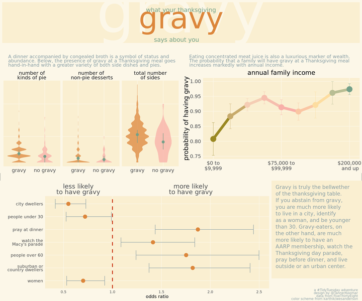
dat <- read_csv("https://github.com/rfordatascience/tidytuesday/raw/master/data/2018/2018-11-20/thanksgiving_meals.csv")## Parsed with column specification:
## cols(
## .default = col_character(),
## id = col_double()
## )## See spec(...) for full column specifications.Boy is this data messy! Lets relabel and organize it a bit.
dat <- dat %>%
filter(is.na(dat) %>% rowSums() < 50) %>%
select(-id, -pie13, -dessert11, -side15, -contains("Other")) %>%
mutate(
"number of\nkinds of pie" = select(., contains("pie")) %>% {!is.na(.)} %>% rowSums(),
"total number\nof sides" = select(., contains("side")) %>% {!is.na(.)} %>% rowSums(),
"number of\n non-pie desserts" = select(., contains("dessert")) %>% {!is.na(.)} %>% rowSums()
) %>% mutate(
family_income = factor(family_income,
levels = c("$0 to $9,999" , "$10,000 to $24,999", "$25,000 to $49,999", "$50,000 to $74,999", "$75,000 to $99,999", "$100,000 to $124,999", "$150,000 to $174,999", "$175,000 to $199,999", "$200,000 and up", "Prefer not to answer", "NA"),
ordered = T)
)Odds Ratio
plot_or <- dat %>%
transmute(
urban = community_type == "Urban",
not_urban = community_type != "Urban",
parade = !is.na(watch_program),
under30 = dat$age == "18 - 29",
over60 = dat$age == "60+",
female = dat$gender == "Female",
pray = dat$prayer == "Yes"
) %>%
#select(prayer, female, friendsgiving, urban, not_urban, parade, under30, over60) %>%
map(function(x){
out <- table(gravy = dat$gravy, foo = x) %>% fisher.test(conf.level = 0.6827)
out <- c(out$estimate, lower = out$conf.int[1], upper = out$conf.int[2])
return(out)
}) %>%
as.data.frame() %>%
rownames_to_column() %>%
gather(key, value, -rowname) %>%
spread(rowname, value) %>%
ggplot(aes(y = key, x = `odds ratio`))+
geom_errorbarh(aes(xmin = lower, xmax = upper), size = .45, color = "#899DA4", height = 0.75) +
geom_point(size = 4, color = "#DC863B") +
geom_vline(xintercept = 1, lty = 2, lwd = 1, color = "#C93312") +
scale_x_continuous(
sec.axis = sec_axis(~ ., breaks = c(0.65, 1.8), labels = c("less likely\nto have gravy", "more likely\nto have gravy"))
) +
scale_y_discrete(labels = c("pray" = "pray at dinner",
"urban" = "city dwellers",
"not_urban" = "suburban or\ncountry dwellers",
"female" = "women",
"under30" = "people under 30",
"over60" = "people over 60",
"parade" = "watch the\nMacy's parade")
) +
ylab("") +
xlab("odds ratio") +
theme_minimal() +
theme(
text = element_text(family = "Poppins"),
axis.text.x.top = element_text(size = 15, lineheight = 0.75),
axis.text.y = element_text(size = 10, lineheight = 0.7),
axis.ticks.x.top = element_blank(),
plot.background = element_rect(color = NA, fill = "#fcf7e8"),
panel.background = element_rect(color = NA, "#faefd1"),
panel.grid = element_line(color = "#fcf7e8"),
panel.grid.minor = element_blank()
)
plot_or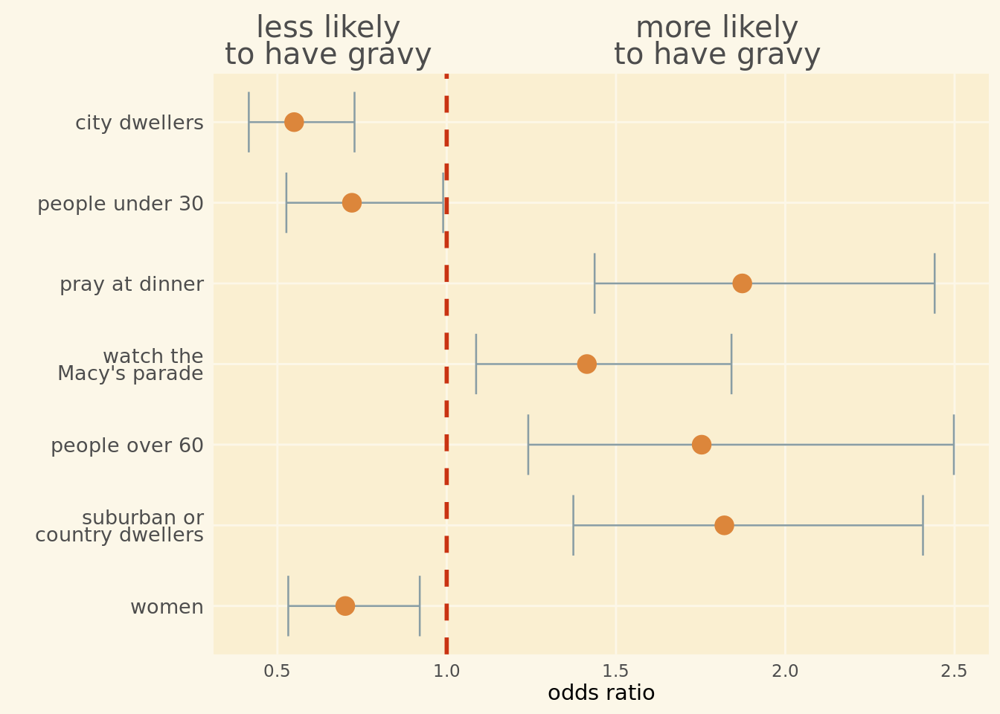
Violin Plots
plot_totals <- dat %>%
filter(!is.na(gravy)) %>%
select(contains("number"), gravy) %>%
gather(key, value, -gravy) %>%
mutate(gravy = case_when(
gravy == "Yes" ~ "gravy",
gravy == "No" ~ "no gravy"
)) %>%
ggplot(aes(x = gravy, y = value, fill = gravy)) +
scale_fill_manual(values = c("gravy" = "#DC863B", "no gravy" = "#F8AFA8")) +
geom_violin(alpha = 0.75, color = NA) +
stat_summary(fun.y = mean,
fun.ymin = function(x){ quantile(x, probs = 0.25) },
fun.ymax = function(x){ quantile(x, probs = 0.75) },
color = "#74A089",
size = 0.5
) +
facet_wrap(~ key) +
theme_minimal() +
theme(legend.position = 'none',
text = element_text(family = "Poppins"),
strip.text = element_text(size = 12, lineheight = 0.75),
axis.text.x.top = element_text(size = 15),
axis.text.x = element_text(size = 12),
axis.title.x = element_blank(),
axis.ticks.x.top = element_blank(),
axis.text.y = element_blank(),
axis.title.y = element_blank(),
plot.background = element_rect(color = NA, fill = "#fcf7e8"),
panel.background = element_rect(color = NA, "#faefd1"),
panel.grid = element_line(color = "#fcf7e8"),
panel.grid.minor = element_blank()
)
plot_totals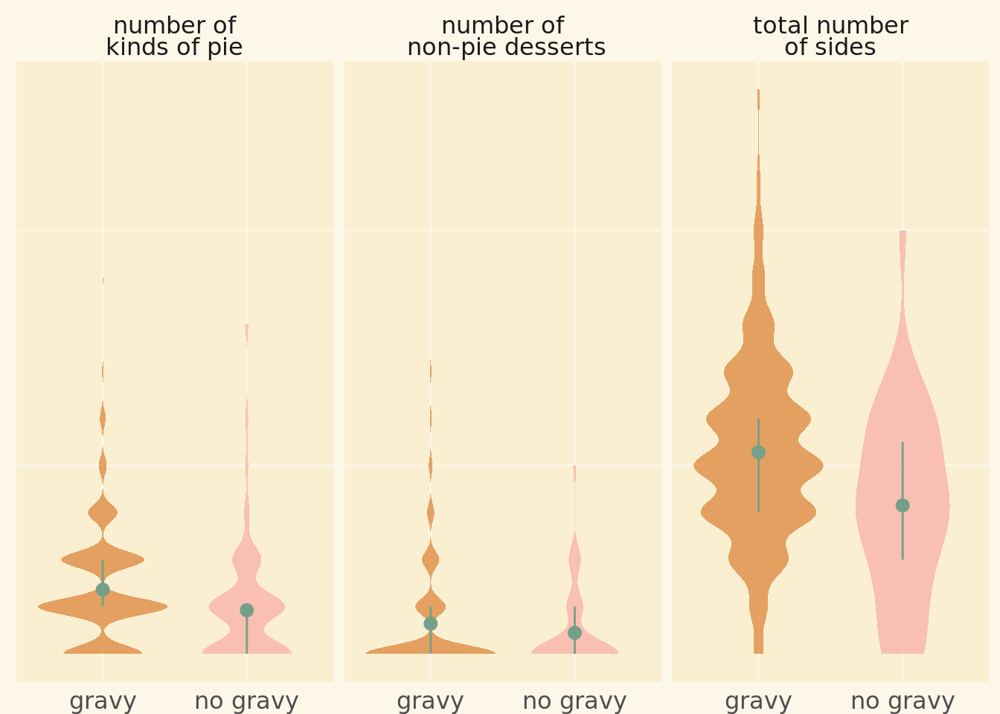
Line Chart of Income
plot_income <- dat %>%
filter(family_income != "NA" & family_income != "Prefer not to answer") %>%
group_by(family_income) %>%
summarize(
gravy = mean(gravy == "Yes", na.rm = T),
gravy_sd = sqrt(gravy*(1-gravy)/n())
) %>%
ungroup() %>%
ggplot(aes(y = gravy, x = family_income, group = 1, color = family_income)) +
geom_line(size = 3) +
geom_point(size = 6) +
geom_errorbar(aes(ymin = gravy - gravy_sd, ymax = gravy + gravy_sd), size = .25, width = .15) +
scale_color_manual(values = wesanderson::wes_palette("Royal2", n = 9, type = "c") ) +
scale_x_discrete(breaks = c("$0 to $9,999" ,"$75,000 to $99,999", "$200,000 and up"), labels = c("$0 to\n$9,999" ,"$75,000 to\n$99,999", "$200,000\n and up")) +
ggtitle("annual family income") +
ylab("probability of having gravy") +
theme_minimal() +
theme(
legend.position = 'none',
text = element_text(family = "Poppins"),
axis.text.x = element_text(size = 12),
axis.title.x = element_blank(),
axis.ticks.x.top = element_blank(),
axis.text.y = element_text(size = 12),
axis.title.y = element_text(size = 15),
plot.background = element_rect(color = NA, fill = "#fcf7e8"),
panel.background = element_rect(color = NA, fill = "#faefd1"),
panel.grid = element_line(color = "#fcf7e8"),
panel.grid.minor = element_blank(),
plot.title = element_text(size = 15, hjust = 0.5)
)
plot_income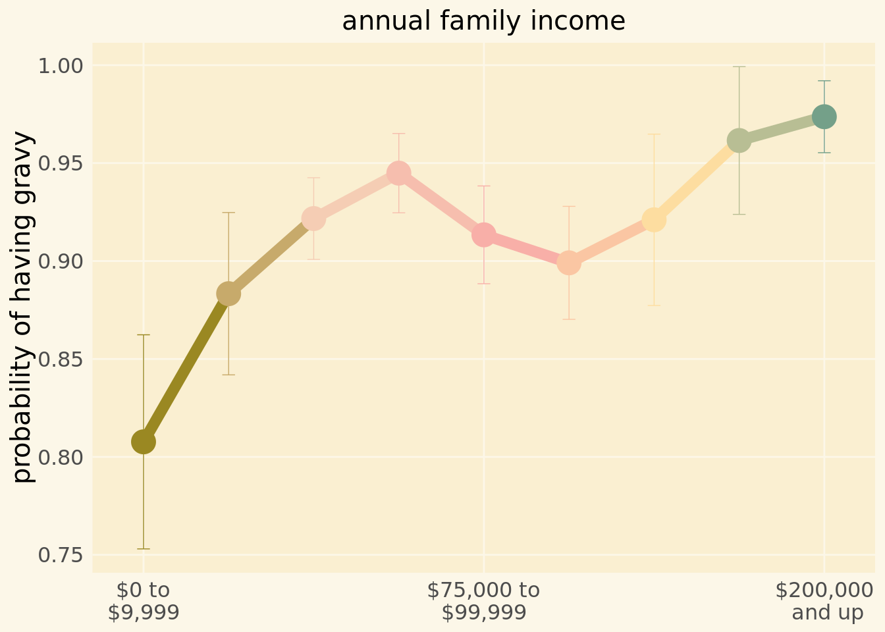
Text Boxes
header <- ggplot() +
annotate(geom = "text", y = 3.15, x = 2, size = 50, family = "Pacifico", color = "#fcf7e8",
label="gravy") +
annotate(geom = "text", y = 3.25, x = 2, size = 5, family = "Poppins", color = "#74A089",
label = "what your thanksgiving" ) +
annotate(geom = "text", y = 2.5, x= 2, size = 25, family = "Pacifico", color = "#DC863B",
label="gravy") +
annotate(geom = "text", y = .35, x = 2, size = 5,family = "Poppins", color = "#74A089", hjust = .6,
label = "says about you") +
ylim(0,4) +
theme_void() +
theme(
plot.background = element_rect(color = "#fcf7e8", fill = "#faefd1", size = 5)
)
header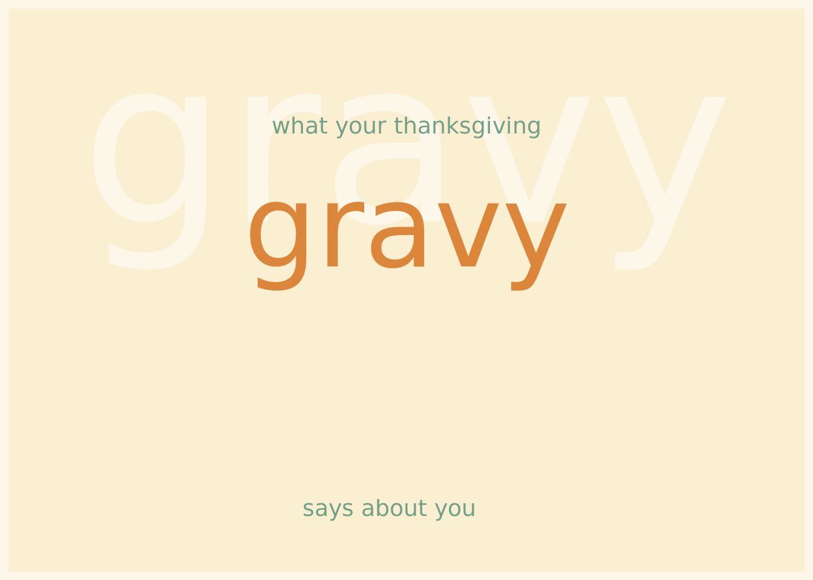
midbar1 <- ggplot() +
ylim(-2,2) +
xlim(-2,2) +
annotate("text", x = -2, y = -2, hjust = 0, vjust = 0, lineheight = 0.75, family = "Poppins", size = 4, color = "#899DA4",
label = str_wrap("A dinner accompanied by congealed broth is a symbol of status and abundance. Below, the presence of gravy at a Thanksgiving meal goes hand-in-hand with a greater variety of both side dishes and pies.", 70)
) +
theme_void() +
theme(
plot.background = element_rect(fill = "#fcf7e8", color = NA)
)
midbar2 <- ggplot() +
ylim(-2,2) +
xlim(-2,2) +
annotate("text", x = -2, y = -2, hjust = 0, vjust = 0, lineheight = 0.75, family = "Poppins", size = 4, color = "#899DA4",
label = str_wrap("Eating concentrated meat juice is also a luxurious marker of wealth. The probability that a family will have gravy at a Thanksgiving meal increases markedly with annual income.", 70)) +
theme_void() +
theme(
plot.background = element_rect(fill = "#fcf7e8", color = NA)
)
midbar1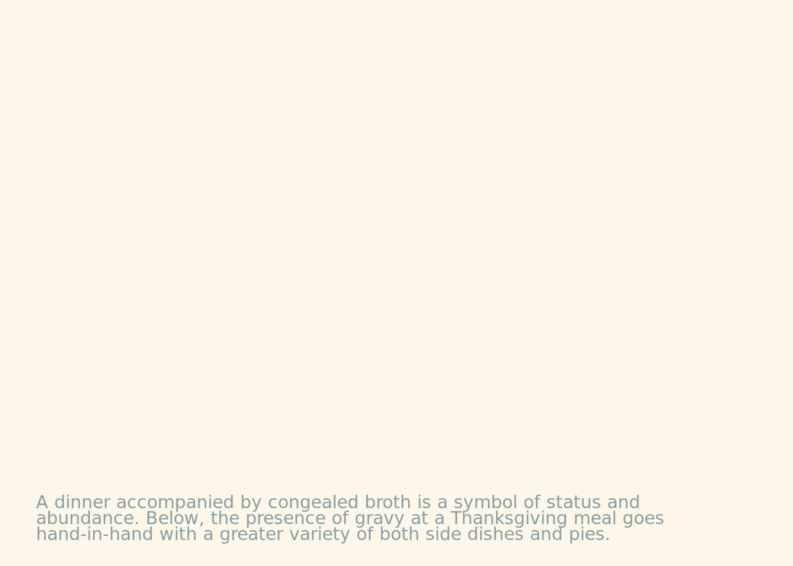
midbar2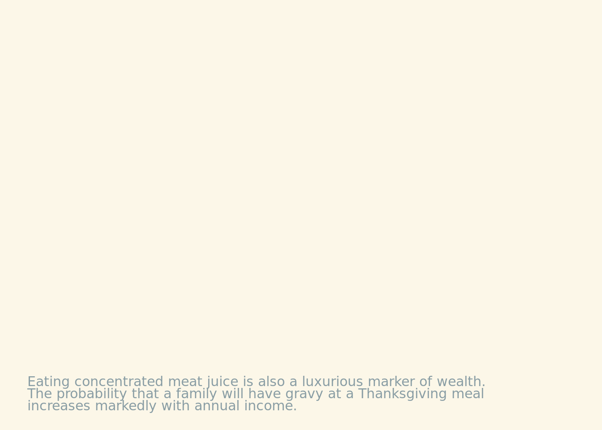
sidebar <- ggplot() +
ylim(-2,2) +
xlim(-2,2) +
annotate("text", x = -2, y = 2, hjust = 0, vjust = 1, lineheight = 1.05, family = "Poppins", size = 4.4, color = "#899DA4",
label = str_wrap("Gravy is truly the bellwether of the thanksgiving table. If you abstain from gravy, you are much more likely to live in a city, identify as a woman, and be younger than 30. Gravy-eaters, on the other hand, are much more likely to have an AARP membership, watch the Thanksgiving day parade, pray before dinner, and live outside or an urban center.", 29)) +
theme_void() +
theme(
plot.background = element_rect(fill = "#faefd1", color = NA)
)
sidebar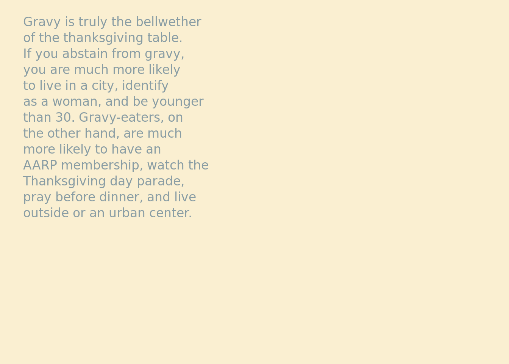
footnote <- ggplot() +
ylim(-2,2) +
xlim(-2,2) +
annotate("text", x = 2, y = -2, hjust = 1, vjust = 0, lineheight = 0.75, family = "Poppins", size = 2.75, color = "#899DA4",
label = paste("a #TidyTuesday adventure\ndesign by @TannerKoomar\ndata from FiveThirtyEight\ncolor scheme from karthik/wesanderson")) +
theme_void() +
theme(
plot.background = element_rect(fill = "#fcf7e8", color = NA)
)
footnote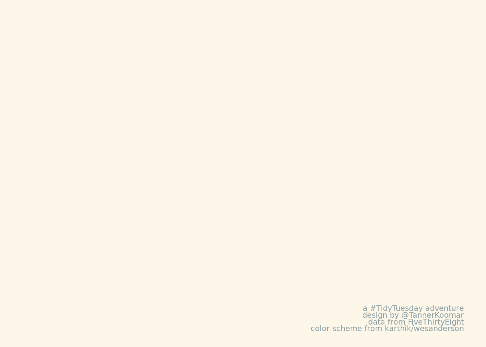
Plots Assemble!
final_plot <- grid.arrange(header,
midbar1,
midbar2,
ggplotGrob(plot_totals),
ggplotGrob(plot_income),
ggplotGrob(plot_or),
sidebar,
footnote,
heights = c(.15, .075, .35, .025, .325, .075),
layout_matrix = rbind(c(1,1,1,1),
c(2,2,3,3),
c(4,4,5,5),
c(NA,NA,NA,NA),
c(6,6,6,7),
c(6,6,6,8))
)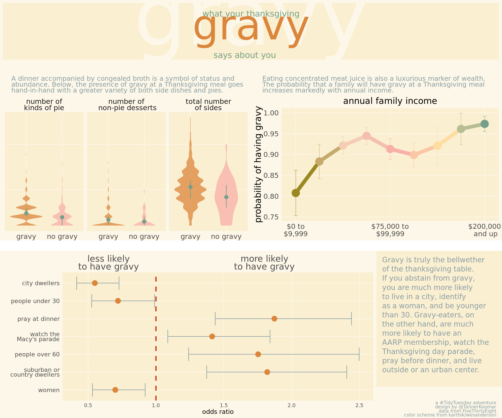
## Get rid of that ugly white bar in the middle. . .
cowplot::ggdraw(final_plot) +
theme(plot.background = element_rect(fill = "#fcf7e8"))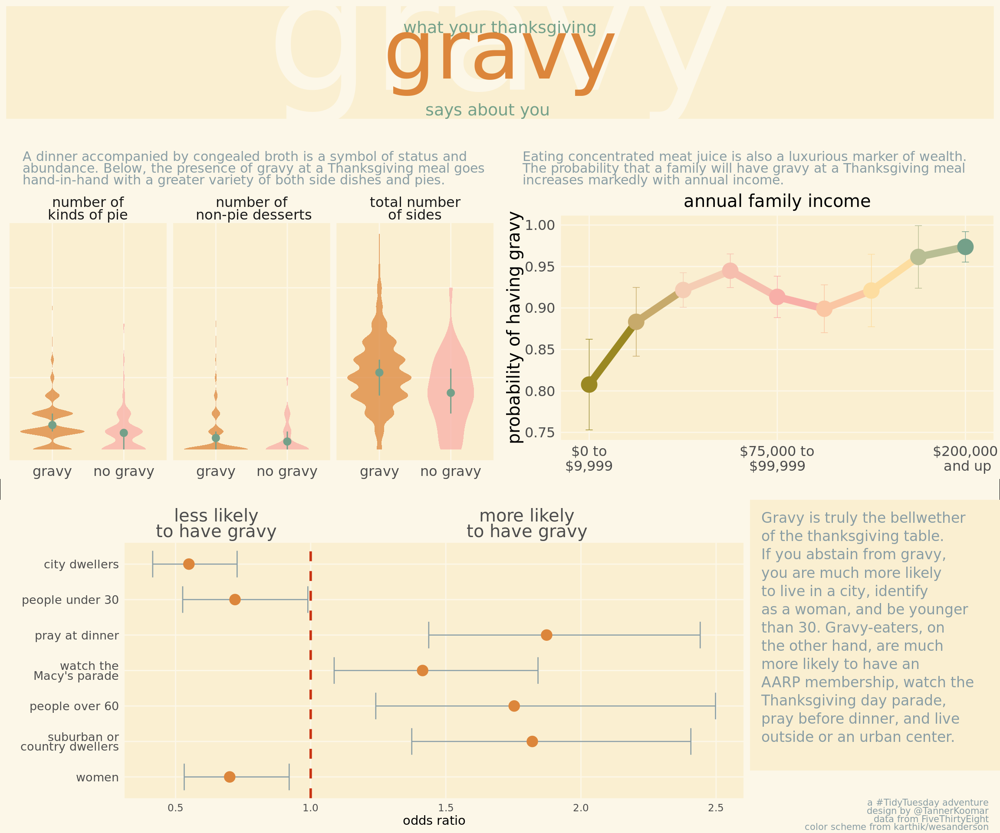